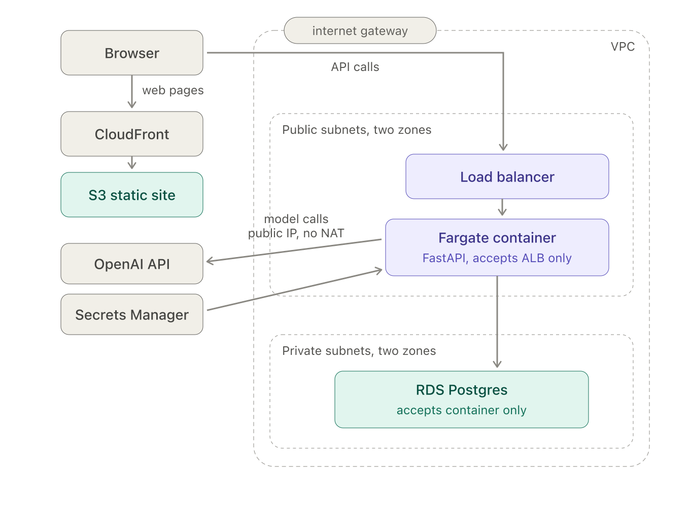

AnswerTrail: building a deep-research agent over a bounded corpus
AnswerTrail answers questions about one AI/LLM YouTube channel by reading that channel’s video transcripts, and it checks every citation in its answer against those transcripts before you ever see the answer. It runs live on AWS.
The agent itself is the small part. The loop that drives it is about a page of control flow, and its answers hold up because of a citation check and two guardrails. The work is everything around the model, and it takes two articles.
This one builds the system that produces the answers: the corpus it reads, the agent harness that searches and cites over that corpus, and the AWS stack that serves the whole thing. The second article is the evaluation: curating the gold data and running the experiments that measure how well the agent answers.
What AnswerTrail is
AnswerTrail is a deep-research agent over a bounded corpus, a fixed body of text the agent is allowed to read and nothing else. The corpus here is the video transcripts of a single AI/LLM YouTube channel. Given a question, the agent runs a ReAct loop written by hand: it searches the transcripts, reads what comes back, decides whether it has enough, and writes an answer whose citations are validated against the corpus. Retrieval is dense-only over Postgres, the model is stateless, and the agent drives its own exploration until it decides it is ready to answer.
Bounding the corpus to one channel is the point, not a limitation. The model has no parametric knowledge of what these particular videos say, so every answer has to come from what the agent retrieves rather than from the model’s own memory. And because the agent may only read those transcripts, “the corpus cannot answer this” is a real outcome the system can reach and report, rather than a prompt it papers over. The live corpus is 475 videos from the channel’s most recent 16 months, cut into 25,401 transcript chunks, about 53 per video. It is live at answertrail.yeesengchan.com, though the site may be taken down at times to avoid running costs.
The corpus is built once, offline
Postgres holds the corpus, and the embeddings and the search index are built from it. An offline pipeline builds the corpus once per channel, in five stages:
- List the videos. Enumerate the channel’s uploads through the YouTube Data API, drop anything 180 seconds or shorter so Shorts are excluded, and write a manifest of the survivors with their titles, descriptions, and publish dates.
- Fetch the transcripts. Pull each video’s caption track, retrying transient network drops with backoff so one dropped connection does not kill a long batch. The language, and whether the captions are auto-generated or human-written, is recorded per video.
- Clean the ASR. Auto-generated captions carry speech-recognition errors, so a
gpt-5.4-minipass repairs them in small batches, each batch given its neighbors as read-only context. A length guard keeps the raw text whenever the rewrite drifts too far from the original, and videos with human captions skip this stage. - Chunk into 30-second windows. Group the caption lines into fixed 30-second windows, the atomic unit the agent later searches and cites. Each chunk’s id is
video_id:start_second. - Embed. Embed every chunk with OpenAI’s
text-embedding-3-largeand store the vector back in Postgres.
The last three stages each read from Postgres the rows not yet at their stage, so the pipeline is resumable: a crash resumes where it stopped rather than restarting. A final stage builds a local OpenSearch index, used only by the offline evaluation for one retrieval comparison; production never touches it.
The embeddings are stored at 1536 dimensions rather than the model’s native 3072, because pgvector’s HNSW index caps vectors at 2000. That truncation is cheap because text-embedding-3-large produces Matryoshka embeddings: a leading prefix of the full vector is itself a complete embedding, with the earliest dimensions carrying the most information. Corpus and query are embedded the same way, so they share one vector space.
The agent is a small loop
With the corpus in place, the agent turns a question into an answer over it.

The model is stateless, so the loop holds the whole conversation and hands it back every turn, and the agent acts only through tools, which is what lets the loop stop it and force it to finish.
It has three tools:
search_transcriptsembeds the query and runs a dense nearest-neighbour search over the pre-embedded chunks using the Postgres HNSW index, returning the top 10 by cosine similarity with no re-ranking, each with its full transcript text.mark_readytakes no arguments; the model calls it to end the search phase once it has gathered enough.submit_answerdelivers the final answer, whose citations are ids only (video_id,start_ts,end_ts). The loop checks every citation against the index before accepting the answer, so a fabricated one is rejected and sent back to be corrected.
Making the answer a tool is the design choice that carries the reliability, because producing the answer then runs through the same loop as searching. A rejected citation comes back on the normal tool-result channel to be fixed, an accepted answer is the loop’s stop signal, and tool_choice can force the submit_answer call when the step budget runs out.
Two guardrails keep the loop honest. The model must run at least 2 distinct searches before it may answer, so it cannot answer without exploring. And a run that keeps searching but finds nothing still stops, reporting that the corpus cannot answer rather than looping forever.
Every run is recorded as a RunEvidenceState: its searches and queries, the chunks retrieved and cited, the token usage and cost, and the outcome, stamped with the recipe version and the git SHA. That provenance is what lets the second article freeze one agent and score every variant against it.
Deployment on AWS
The system runs on AWS, defined entirely in Terraform and designed to be torn down and rebuilt on demand. No secret is kept in code or git.

The frontend is a static site on S3, served through CloudFront. The API is a single small Fargate container behind a load balancer that runs the agent and streams progress back over Server-Sent Events. Both sit in one VPC across two availability zones.
A few choices are worth calling out. The app container sits in a public subnet with its own public IP, so it can reach the OpenAI API through the internet gateway; the alternative, a private subnet, would need a NAT gateway at about $32 per month for the same outbound calls. Security is a chain of one-way tiers: the load balancer is the only thing open to the internet, the container accepts traffic only from the load balancer, and the database accepts traffic only from the container, each rule written against the tier’s security group rather than any IP address. The database is disposable, holding nothing that cannot be reloaded from a dump kept in S3, so the whole stack can be destroyed when idle and rebuilt later with a single terraform apply.
Deploys are automatic: every push to main builds the container image, ships it to ECS, then rebuilds the static frontend and clears the CloudFront cache, authenticating to AWS through OpenID Connect rather than stored keys.
The loop is small on purpose
The agent is a page of control flow, and its reliability comes from the citation check and two guardrails (it must search before it can answer, and it stops rather than invent one when the corpus has no answer). The work is everything around it: the ingestion pipeline that turns a channel into 25,401 searchable chunks, the agent harness that searches and cites over them, and the AWS stack that serves the whole thing and rebuilds from a single command.
Building that system is only half the effort. The other half is measuring it. The second article curates the evaluation data and runs the experiments that score the agent.
Code companion
The bounded-deep-research repo has the ingestion pipeline, the agent, and the full Terraform stack, and the system is live at answertrail.yeesengchan.com (occasionally taken down to save on running costs). A short demonstration video is planned: ▸ EDIT ME.